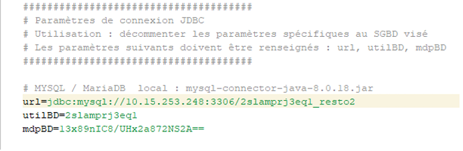
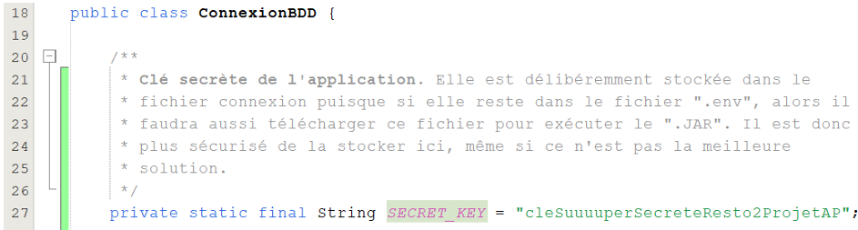
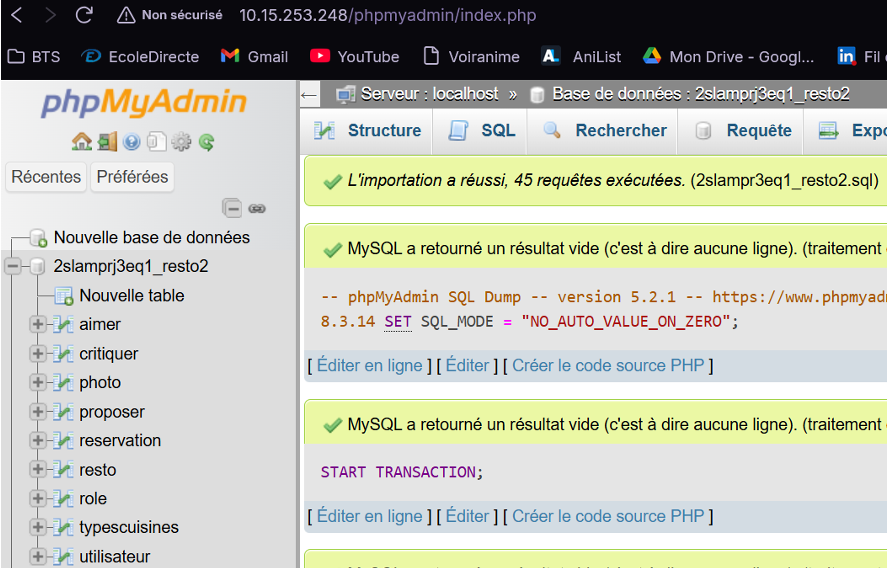

Pour le déploiement, nous avons adapté le projet pour utiliser une base de données distante.
Nous avons modifié les paramètres de connexion dans DatabaseConnection.java
pour pointer vers le serveur de la Joliverie.

Mais également mettre en place une clé secrete pour la connexion à la base de données distante :

Nous avons créé un script SQL pour initialiser la base de données avec les tables nécessaires et insérer des données de test.
Nous avons utilisé PhpMyAdmin pour gérer la base de données sur le serveur. Les tables ont été créées avec les bonnes structures, et les données de test ont été insérées.

Les tests de connexion ont confirmé que l'application peut accéder à la base de données distante.